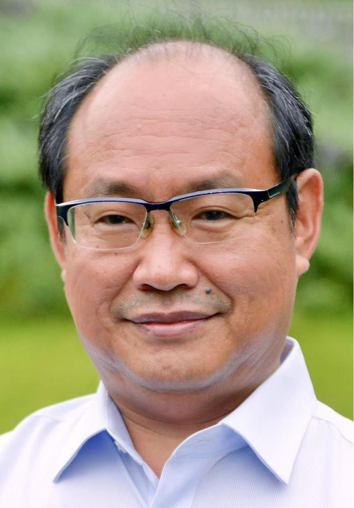

協賛・支援機関

広島大学
華東師範大学
愛媛大学デジタル情報人材育成機構
Multidisciplinary Digital Publishing Institute（MDPI）
MDPI Software誌 特集号
Software Reliability, Security and Quality Assurance
ソフトウェアの信頼性・セキュリティ・品質保証
特集号の詳細はこちら2026年11月30日～12月1日 — 日本・愛媛県松山市
ソフトウェアのフォールト予防、検証、および妥当性確認は、ソフトウェアの生産性、信頼性、品質を確保するうえで不可欠かつ重要な取り組みです。フォールト予防は、ソフトウェアシステムへのフォールトの混入および発生をいかに防ぐかという課題に焦点を当てます。検証とは、ソフトウェアシステムがその仕様または性質を満たしているかを厳密に確認するための手段です。妥当性確認とは、ソフトウェアシステムの振る舞いと性能が利用者の要求を満たしているかを確認するための技術および活動を指します。これらの課題に取り組むため、さまざまな技術や支援ツールが開発されてきましたが、依然として多くの困難や未解決問題が残されています。
本シンポジウムは、ソフトウェア品質保証に携わる研究者および実務家を招き、フォールト予防・検証・妥当性確認の目標を達成するために、形式手法、テストに基づく手法、AIを活用した手法、およびそれらの組み合わせをどのように研究・確立・支援できるかについて、意見交換と議論を行うことを目的とします。上記のテーマに関心をお持ちの皆様からの論文投稿およびシンポジウムへの参加を歓迎します。
著者の皆様には、以下を含む（ただし、これらに限定されない）トピックに関する、独創的かつ未発表の研究成果を記述した技術論文の投稿を募集します。
参加登録および支払い、ならびに必要に応じてビザ申請用招へい状に関するお問い合わせは、Junjun Zheng博士（jzheng@hiroshima-u.ac.jp）まで電子メールでご連絡ください。
第3回ソフトウェアフォールト予防・検証・妥当性確認に関する国際シンポジウム（SFPVV 2026）は、愛媛大学の総合情報メディアセンター（CITE）で開催されます。CITEは松山城の北側に位置する城北キャンパス内にあり、松山市中心部から徒歩圏内です。
CITEは、愛媛大学デジタル情報人材育成機構（IDDHR）を構成する主要部門の一つです。大学の情報基盤およびネットワークセキュリティを管理し、愛媛大学における情報技術教育と学術研究活動を支援しています。
| ホテル | 会場までの距離・所要時間 |
|---|---|
| ホテルビスタ松山 | 徒歩19分（1.4 km）／車で7分 |
| カンデオホテルズ松山大街道 | 徒歩18分（1.3 km）／車で6分 |
| 天然温泉 石手の湯 ドーミーイン松山 | 徒歩22分（1.5 km）／車で7分 |
| ダイワロイネットホテル松山 | 徒歩18分（1.3 km）／車で6分 |
| 東横INN松山一番町 | 徒歩19分（1.4 km）／車で6分 |
| ANAクラウンプラザホテル松山 | 徒歩20分（1.4 km）／車で7分 |
土屋 達弘（Tatsuhiro Tsuchiya）氏は、大阪大学大学院情報科学研究科の教授であり、ディペンダビリティ工学講座を主宰しています。1995年および1998年に大阪大学で、それぞれ工学修士号および博士号を取得しました。研究分野は、ソフトウェアテスト、モデル検査、フォールトトレランスなど、信頼性と品質の高いコンピューティングシステムを構築するための技術です。第21回IEEE Pacific Rim International Symposium on Dependable Computing（PRDC 2015）、第17回IEEE International Conference on Dependable, Autonomic and Secure Computing（DASC 2019）、第13回International Workshop on Combinatorial Testing（IWCT 2024）、および第8回IEEE International Conference on Artificial Intelligence Testing（AITest 2026）でプログラム共同委員長を務めました。

Zhiming Liu氏は、中国・重慶の西南大学教授です。1988年に中国科学院ソフトウェア研究所で修士号を、1991年にUniversity of Warwickでコンピュータサイエンスの博士号を取得しました。2016年に西南大学へ常勤で着任する以前は、University of Warwick、University of Leicester、およびマカオのUNU-IISTで職を務めました。研究分野は、ソフトウェアの理論と方法、信頼できるソフトウェアシステム、ならびに近年では人間・サイバー・フィジカルシステム（HCPS）のモデリングおよび設計手法です。フォールトトレラント・リアルタイムプログラミングのためのモデル変換に基づく手法、確率的Duration Calculus、オブジェクト指向プログラムの意味論とリファインメント、rCOSモデル駆動ソフトウェア開発手法、およびHCPSソフトウェアアーキテクチャのモデリングと設計に関する研究で知られています。国際会議ICTAC、FACS、SETTAおよびスプリングスクールSETSSの創設者の一人であり、ATVA、APLAS、FM、ICTAC、SEFM、VSTTEを含む多数の会議で委員長またはプログラム委員を務めました。また、Formal Aspects of Computing、Science of Computer Programming、Theoretical Computer Scienceなどの学術誌の特集号でゲストエディターを務めています。
投稿区分には、プレゼンテーション論文とレギュラー論文の2種類があります。いずれの論文も英語で執筆してください。すべての論文は、EasyChair投稿ページから投稿してください。採択されたプレゼンテーション論文は本シンポジウムの予稿集には収録されません。採択されたレギュラー論文のみが、Springer LNCSシリーズとして刊行される予稿集に収録されます。シンポジウムの詳細は公式ウェブサイトをご覧ください。
広島大学
華東師範大学
愛媛大学デジタル情報人材育成機構
Multidisciplinary Digital Publishing Institute（MDPI）
MDPI Software誌 特集号
ソフトウェアの信頼性・セキュリティ・品質保証
特集号の詳細はこちらSFPVV 2026 各賞
SFPVV 2026では、MDPI Softwareの協賛により、最優秀論文賞（Best Paper Award）および最優秀発表賞（Best Presentation Award）を授与する予定です。
最優秀論文賞は、論文の技術的品質と研究上の貢献を評価するもので、本シンポジウムに採択されたすべてのレギュラー論文の中から選考されます。一方、最優秀発表賞は、発表の明確さ、構成、研究内容を伝えるうえでの有効性、ならびに質疑応答における発表者と聴衆とのやり取りを含む、発表そのものの質を評価するもので、レギュラー論文およびプレゼンテーション論文の両部門から選考されます。
実行委員会がそれぞれの受賞者を選考し、結果はクロージングセッションで発表するとともに、本シンポジウムのウェブサイトに掲載します。各受賞者には賞金が授与されます。
これらの賞が、著者による質の高い論文投稿と、発表者による優れたプレゼンテーションを促す契機となることを期待しています。また、すべての参加者間の交流と議論が一層活発になることを願っています。
Tadashi Dohi，広島大学（日本）
Shaoying Liu（委員長），華東師範大学（中国）
Geguang Pu，華東師範大学（中国）
Tatsuhiro Tsuchiya，大阪大学（日本）
Tadashi Dohi，広島大学（日本）
Hirohisa Aman，愛媛大学（日本）
Xi Wang，Shanghai University（中国）
Junjun Zheng，広島大学（日本）
Hiroshi Takahashi，愛媛大学（日本）
Shozo Saeki，愛媛大学（日本）
Jingchi Wu，広島大学（日本）
Yamine Ait Ameur，IRIT/INPT-ENSEEIHT（フランス）
Sousuke Amasaki，南山大学（日本）
Yoonsik Cheon，University of Texas at El Paso（米国）
Yujun Dai，Micron Technology
Mara Downing，University of California Santa Barbara（米国）
Dingbang Fang，Fujian Normal University（中国）
Marc Frappier，Université de Sherbrooke（カナダ）
Sabine Glesner，Technical University of Berlin（ドイツ）
Kiyoshi Honda，大阪工業大学（日本）
Rao Lei，Southwest Petroleum University（中国）
Jiandong Li，Peking University（中国）
Jingyue Li，Norwegian University of Science and Technology（ノルウェー）
Yang Li，Tianjin University（中国）
Chen-Kai Lin，Academia Sinica（台湾）
Ai Liu，Nanjing University of Aeronautics and Astronautics（中国）
Osamu Mizuno，京都工芸繊維大学（日本）
Akito Monden，岡山大学（日本）
Hiroyuki Nakagawa，岡山大学（日本）
Shin Nakajima，国立情報学研究所（日本）
Fumiko Nagoya，日本大学（日本）
Hiroyuki Okamura，広島大学（日本）
Jun Pang，University of Luxembourg（ルクセンブルク）
Yuji Sato，法政大学（日本）
Wuwei Shen，Western Michigan University（米国）
Xinfeng Shu，Xi'an University of Posts and Telecommunications（中国）
Tatsuhiro Tsuchiya，大阪大学（日本）
Masateru Tsunoda，近畿大学（日本）
Pingyan Wang，Guangdong University of Petrochemical Technology（中国）
Tomoyuki Yokogawa，岡山県立大学（日本）
Zhen You，Jiangxi Normal University（中国）
Naijun Zhan，Chinese Academy of Sciences（中国）
Jian Zhang，Chinese Academy of Sciences（中国）
Jianjun Zhao，九州大学（日本）
Junjun Zheng，広島大学（日本）